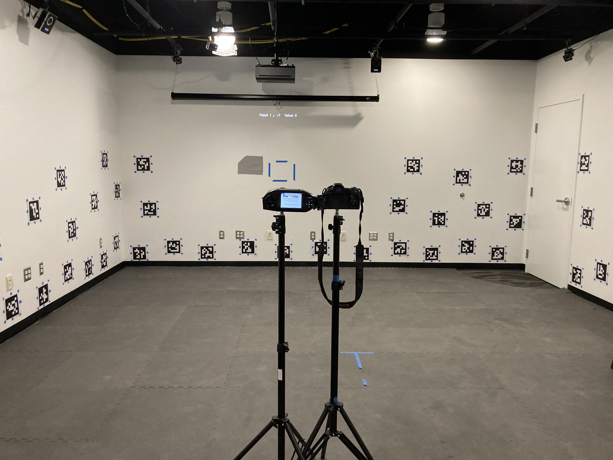
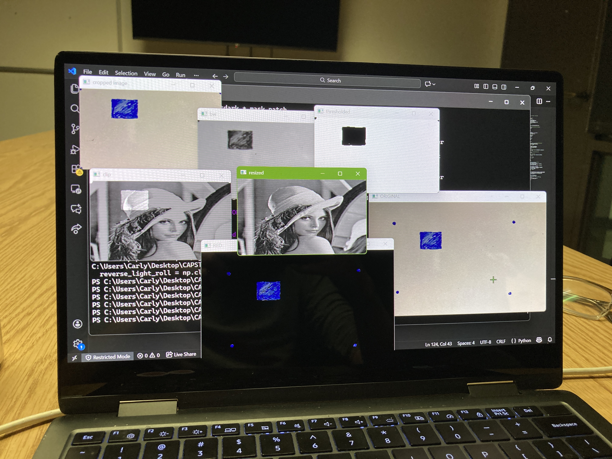
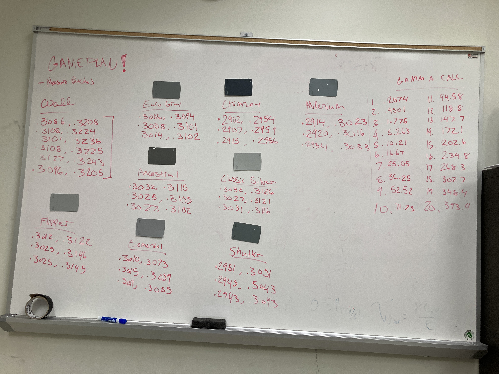

A quick overview of what I’ve been working on for the past few months, while I am home for spring break.
Tags: professional, wip
It’s nice to be home for a week, but I can’t help but spend it thinking about my capstone project, as I wrap up my senior year. Unfortunately, my tools and setup for my senior capstone has been confined to the MPS Imaging Lab, hidden away in the basement at RIT’s arts building. Since my projector setup is inaccessible at the moment, I figured this is the perfect opportunity to start writing a little bit about the project and my process.

My capstone focuses on correcting projected images when they are displayed on non-uniform surfaces, specifically screens with varying reflectances. The goal of the project is not only to compensate for these distortions, but also to evaluate the trade-offs involved in producing a radiometric match - if certain parts of the projection screen are darker than others, the scene’s dynamic range must be clipped globally to produce a uniform image. I am aiming to study whether or not this trade-off is worth it and how it affects perceived image quality. This involves three main parts.
Image Processing & Programming
Luminance Mapping & Measurement
Psychophysics & Image Quality Evaluation
x
Image Processing & Programming
This part of the project focuses on identifying the distortions on a projection screen and mapping the projected image to that screen. Using image processing techniques such as thresholding and perspective transforms, I analyze a photograph of the projection to determine the screen geometry and locate where distortions occur. By taking a picture of the projected test pattern and uploading it to my program, the system can automatically identify the screen and any patches on the screen. The test image is then segmented into regions based on where the projection falls, so that distortions in those areas can be manipulated independently.

x
Luminance Mapping & Measurement
This project involves careful measurement and math to ensure accuracy throughout the pipeline. I first measured the reflectance and chromaticity of the projection screen using the PR-655 spectroradiometer, and then a series of paint swatches to identify ones that were several stops darker than the wall but closely matched in chromaticity (ΔE < 2). By converting code values to luminance using the projector’s measured gamma and the minimum and maximum reflectance of the surfaces, I could perform my corrections in linear light space. From there, I implemented several approaches to handle these luminance differences, including hard clipping, soft roll-offs, and partial correction methods.

x
Psychophysics & Image Quality Evaluation
For the final leg of the project, I am currently working on designing experiments to determine user preference. A uniform image clips the dynamic range significantly. Is it worth it to sacrifice the highlights and shadows for uniformity or will participants prefer the preserved dynamic range of the image even if some distortion remains? Maybe the ideal solution is somewhere in between? Studies will test when distortions become perceptually noticeable, and how viewers judge overall image quality when faced with this trade-off.
Stay tuned for more as I wrap up this journey and analyze the results of ongoing experiments!